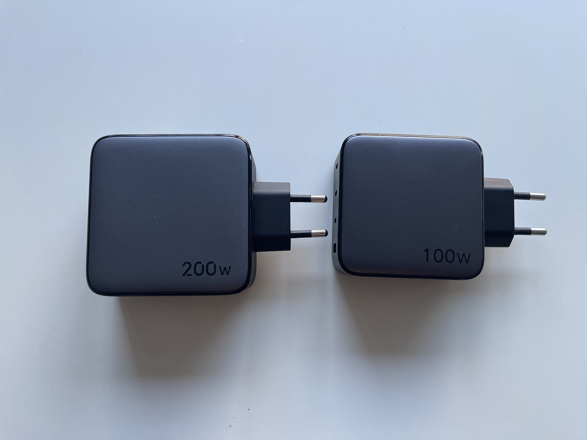
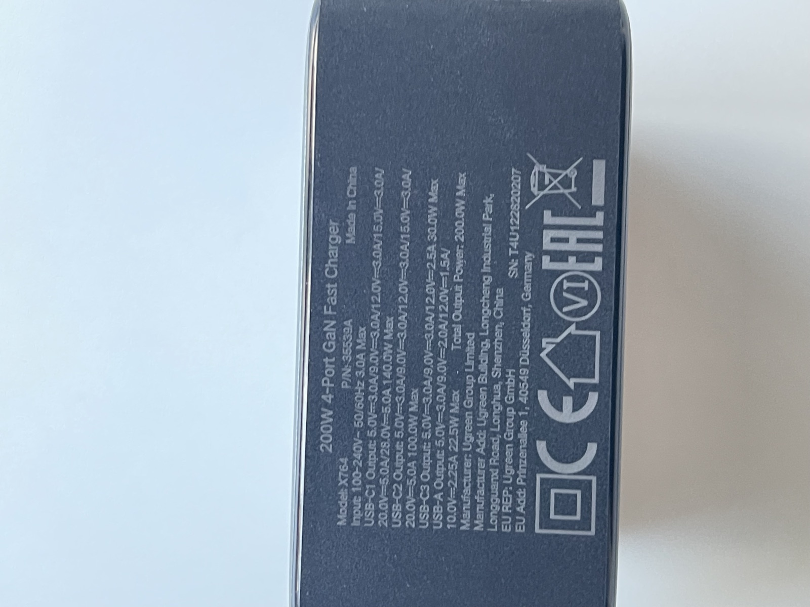
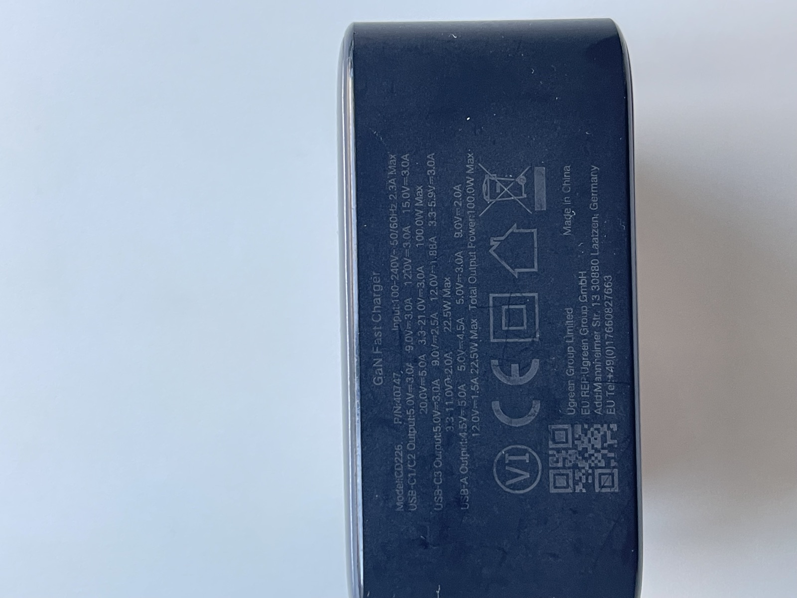
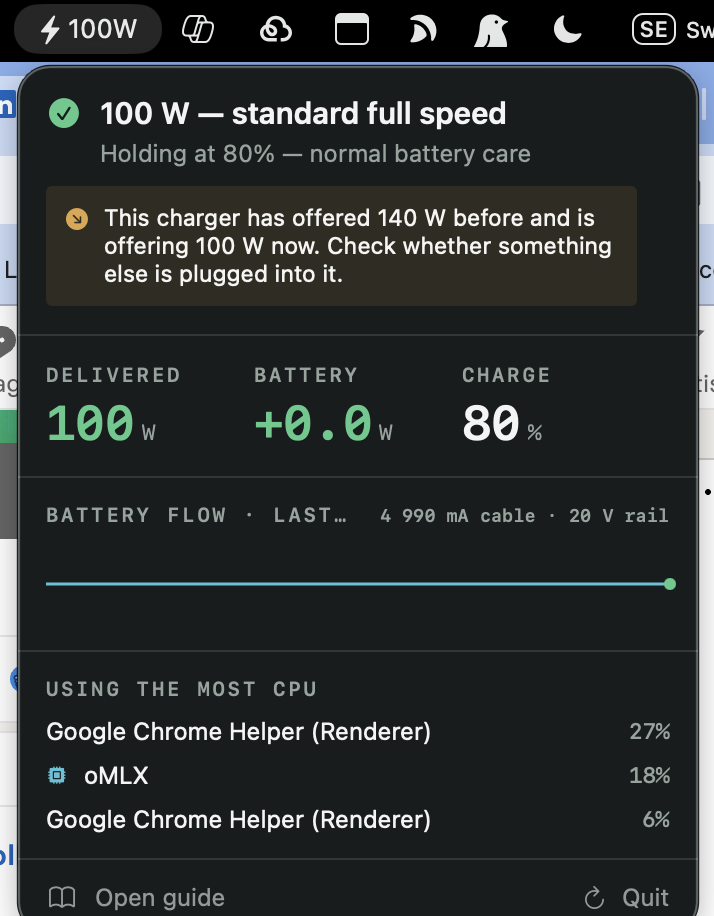

A “100 W” charger with the wrong cable delivers 60 W. Your Mac won't tell you — the menu bar cheerfully says Charging while the battery goes down. Here's how to find out what you're actually getting, and what to buy instead.
Free and open source. Signed and notarised by Apple, so it opens without a Gatekeeper warning. macOS 14 or later.
Ordinary work — mail, browsing, documents — draws so little power that almost any charger keeps up, and a weak one goes unnoticed for years. Local AI is different. Ollama and oMLX push the GPU and memory bandwidth continuously, which is close to the highest sustained power draw an Apple silicon chip can produce. Higher than compiling. Higher than exporting video.
Fans at maximum but tokens crawl.
The menu bar says charging. The percentage falls anyway.
Plugged in all day, still stuck at half.
No keys, no screen, no response — as if it failed.
Pick your Mac and what you do with it. Both answers matter — the same laptop can need 35 W or 140 W depending on the job.
Draw figures are typical sustained values for these chips, rounded, and used to rank setups — not a spec sheet. Your own number depends on screen brightness, external displays, and which model you're running. The diagnostic commands further down measure your real machine instead of estimating it.
Every USB-C cable carries a rating. Above 3 amps a cable must contain a small chip — an e-marker — that tells the charger it can handle more. No chip, no permission, and the charger is required by the standard to stop at 3 A. That is the entire 60 W trap: the charger isn't weak, it's being refused.
| Cable | E-marker | Current | Voltage | Cable rating | How to spot it |
|---|---|---|---|---|---|
| Basic USB-CBundled with phones, cheap spares | No | 3 A | 20 V | 60 W | Thin, smooth plastic, no printing. If you don't know where it came from, assume this one. |
| 5 A e-markedUSB-PD 3.0 | Yes | 5 A | 20 V | 100 W | Usually printed “100W” on the connector or sleeve. Often braided. |
| 240 W e-markedUSB-PD 3.1 EPR | Yes | 5 A | 48 V | 240 W | Printed “240W” or “EPR”. The only kind that can carry 140 W to a Mac. |
| Apple USB-C Charge CableShips with iPhone and small adapters | Yes | 3 A | 20 V | 60 W | Thin white plastic. Looks identical to the good one at a glance — this catches people constantly. |
| Apple 240 W Charge CableWoven; ships with 140 W MacBook Pro | Yes | 5 A | 48 V | 240 W | Thick, fabric-woven. If it's woven, it's the good one. |
| MagSafe 3 cableMagnetic, woven | n/a | 5 A | 28 V | 140 W | Obvious — magnetic flat connector. Needs a 140 W adapter behind it to reach 140 W. |
The right-hand column is what each cable is rated to carry, not what a Mac will draw through it. No Mac charges at 240 W. Apple's highest charging rate is 140 W, on the 16-inch MacBook Pro; most other models are lower.
240 W is the ceiling defined by USB-PD 3.1, and cables rated for it — including Apple's own 240 W cable and UGREEN's equivalent — exist so the cable is never the constraint. Buying one does not make your Mac charge faster than 140 W; it removes the cable as a reason you are not reaching it.
Supplying more than a model's maximum is harmless — it simply is not used. Supplying less is what causes throttling and battery drain under load.
| Model | Ships with | Maximum it will draw |
|---|---|---|
| MacBook Air 13″ | 30 W | 35 W |
| MacBook Air 15″ | 35 W | 35 W |
| MacBook Pro 14″base chip | 70 W | 96 W |
| MacBook Pro 14″Pro / Max chip | 96 W | 96–140 W |
| MacBook Pro 16″ | 140 W | 140 W |
140 W is the highest rate any Mac accepts. Reaching it over USB-C requires PD 3.1 at both ends — a charger that offers the 28 V rail and a cable rated for it. MagSafe reaches the same 140 W and is unaffected by cable choice.
Apple's thin white USB-C cable and Apple's woven 240 W cable are both genuine Apple cables, both e-marked, and both look like “the Apple cable.” One carries 60 W, the other 240 W. Woven means fast. Smooth plastic means 60 W. That single texture check settles most cases.
A common assumption is that MagSafe charges faster. It doesn't — on current MacBook Pros both paths reach the same 140 W. Choose on ergonomics.
| MagSafe 3 | USB-C | |
|---|---|---|
| Maximum power | 140 W | 140 W |
| Needs a special cable | The MagSafe cable itself | Yes — 240 W / PD 3.1 rated |
| Survives a tripped cable | Yes — detaches magnetically | No — the laptop comes with it |
| Uses up a USB-C port | No | Yes |
| Works with a third-party charger | Yes, with a 140 W PD 3.1 adapter | Yes |
| Carries data | No | Yes |
Reaching 140 W over USB-C requires a Mac that supports it. MacBook Pro models from the M3 generation onward do; earlier Apple silicon MacBook Pros fast-charge through MagSafe. If your Mac is older and you want the full rate, MagSafe is the path.
Multi-port chargers advertise their total. That total gets divided the moment a second device appears — and on many models it divides even when the second device is a fully charged phone drawing nothing. A typical 100 W three-port charger behaves like this:
| What's plugged in | Your Mac gets | Everything else | Result |
|---|---|---|---|
| Mac alone, on the primary port | 100 W | — | Full rated power |
| Mac + anything in the second USB-C port | 65 W | 30 W | Silently cut by a third |
| Mac + anything in USB-A | 65 W | 22.5 W | Same penalty, even for a cable charging nothing |
This is why the exact wattage matters when you check. 60 W means your cable is the limit. 65 W means the charger is splitting power. They're one watt apart on paper and completely different problems — and 65 W tells you to go look for something plugged into another port.
Power-sharing can also stick. If a charger has divided its output once, it may hold that split until mains power is removed. Unplug it from the wall for 15 seconds — not just from the laptop — before concluding anything.
Two UGREEN GaN chargers, 2022 and 2026, photographed together. They are close to the same size and shape. The rated totals differ — 100 W against 200 W — but the total is not the number that matters to a laptop. The rails on offer are.

| Per port | 2022 · CD226 · 100 W | 2026 · X764 · 200 W |
|---|---|---|
| Primary USB-C | 100 W20 V / 5 A | 140 W28 V / 5 A |
| Second USB-C | 100 Wshared with the first | 100 W20 V / 5 A |
| Third USB-C | 22.5 W | 30 W |
| USB-A | 22.5 W | 22.5 W |
| Highest voltage rail | 20 V | 28 V |
| Standard | USB-PD 3.0 | USB-PD 3.1 (EPR) |
| Combined output | 100 W | 200 W |
The 2022 unit has no 28 V rail. Its highest tier is 20 V, and 20 V × 5 A is 100 W. That is a hard ceiling set by the hardware: no cable, no port, and no firmware update can take a MacBook Pro to 140 W through it.
140 W requires 28 V, which arrived with USB-PD 3.1. A charger either offers that rail or it does not. This is why “100 W versus 200 W” understates the difference — the useful comparison is 100 W versus 140 W to a single laptop, and it is a generational change rather than a bigger version of the same thing.
Both units were measured with Smart Charging. Every figure matched the label, which is the point: the information is accurate and public, printed on the underside of the charger — it is simply never surfaced while you are using the machine.
| Charger | Port | Label states | Measured |
|---|---|---|---|
| 2026 · 200 W | C1 | 28.0 V / 5.0 A · 140 W | 140 W @ 28 V |
| 2026 · 200 W | C2 | 20.0 V / 5.0 A · 100 W | 100 W @ 20 V |
| 2026 · 200 W | C3 | 12.0 V / 2.5 A · 30 W | 30 W @ 12 V |
| 2022 · 100 W | C1 | 20.0 V / 5.0 A · 100 W | 99 W @ 20 V |


Before replacing a charger, read its underside. If the highest listed voltage is 20 V, 100 W is its limit for a laptop no matter what the total says.
The case for a 200 W four-port charger is not that any single machine needs 200 W. It is that one device can replace two manufacturer power supplies with different connectors, different voltages and very different weights.
| Machine | Supplied adapter | Accepts over USB-C | From the 200 W charger |
|---|---|---|---|
| MacBook Pro 16″M-series Max | 140 W · USB-C | 140 W | 140 W on C1 |
| Dell Precision 768016″ mobile workstation | 240 W · 7.4 mm barrel | 130 W | 130 W on C1 |
Dell documents 130 W input on the Precision 7680's Thunderbolt 4 ports, alongside the 240 W barrel adapter it ships with. USB-C is a supported second path, not a workaround.
A 240 W workstation brick weighs roughly 1.5 kg. Add a second adapter for the Mac and the power supplies alone approach the weight of a laptop. A single GaN charger replaces both and fits in a hand.
Hotel desks, trains and shared workspaces rarely offer two free sockets. Four ports from one plug also charges a phone and a headset without a second adapter.
The same charger serves macOS and Windows hardware because USB-PD is a standard, not a vendor feature. Only the cable rating and the port you choose determine what each machine receives.
Both machines at once share the 200 W total, so each settles near 100 W rather than its maximum. Full rate is available to whichever is on the primary port.
130 W is below the 240 W the Precision ships with. For document work, builds and virtual machines that is comfortable. Under sustained CPU and discrete-GPU load the machine will draw more than USB-C can supply and make up the difference from its battery — the same deficit this site describes for a Mac, on different hardware.
The practical arrangement is the barrel adapter at a fixed desk, and the 200 W charger for travel, where carrying one supply instead of two matters more than peak throughput.
The engine below is the same set of rules the app applies, ported to JavaScript and running in this page. Select a reading measured on real hardware to see how it responds, or paste your own machine's figures underneath. Nothing is uploaded either way.
One read-only command. It changes nothing and needs no administrator rights.
ioreg -rn AppleSmartBattery | tr ',' '\n' | grep -E '"(Watts|AdapterVoltage|Current|CurrentCapacity|Voltage|InstantAmperage|IsCharging|Temperature|MaxCapacity|CycleCount|MaxVoltage|MaxCurrent|ExternalConnected)"'
Step 2 · paste everything it printed here.
The command only reads sensor values. It changes nothing, needs no administrator rights, and works on any Mac with a battery.
Open Terminal (press ⌘ Space, type Terminal, press Return), paste, press Return. Nothing here changes anything on your Mac — both commands only read.
Mac on the charger's primary port. Nothing in the other ports — check physically, including small dongles. Charger plugged directly into the wall, not a hub or extension.
This is the headline number — what your Mac is actually receiving right now.
system_profiler SPPowerDataType | grep -A6 "AC Charger Information"
Current is the cable's ceiling; AdapterVoltage shows which rail you're on. Together they name the culprit.
ioreg -rn AppleSmartBattery | tr ',' '\n' | grep -E '"(Watts|Current|AdapterVoltage)"='
| Watts | Current | Diagnosis | Fix |
|---|---|---|---|
| 60 | 3000 | Cable has no e-marker. Capped at 3 A regardless of charger. | Replace the cable. Cheapest fix there is. |
| 65 | 3250 | Charger is splitting power. It thinks a second device is attached. | Empty the other ports, then unplug from the wall for 15 s. |
| 30 | 3000 | You're on the charger's low-priority port, or it's mid-negotiation. | Move to the primary port and re-check after 10 s. |
| 100 | 5000 | Full standard USB-PD. Fine for everything except sustained large-model work. | Nothing, unless you run big models. |
| 140 | 4990 | Full rate. Voltage will read 28000 — that rail only exists on PD 3.1. | Done. |
To see whether you're winning or losing while a model runs, start a generation and watch the battery current. Press Control + C to stop.
while :; do ioreg -rn AppleSmartBattery | grep '"InstantAmperage"'; sleep 5; done
A normal number means you're charging. A gigantic one like 18446744073709551394 is how macOS writes a negative value — it means the battery is draining while plugged in. That's the whole problem, visible in one line.
Buy this before anything else, and buy it even if you're sure your cable is fine. It's the cheapest component, the most common failure, and it's required for any speed above 100 W later. Versions with a small wattage display on the connector are worth the few euros more: you see the number without opening Terminal ever again.
With a proper cable, your existing charger may already deliver its full rating. If that's enough for your workload, you're finished and you've spent €20 instead of €100.
Required for sustained large-model work on Pro and Max chips. Check the fine print for 140 W on a single port and PD 3.1. Many “200 W” chargers cap every individual port at 100 W, which buys you nothing. Apple's own 140 W adapter is the guaranteed-correct option.
Empty every other port on the charger. Unplug it from the wall for 15 seconds. Move to the primary port. Try your other cable — if two cables give different wattages, the higher one is the better cable. Plug into the wall directly rather than through a hub, monitor, or extension lead. And if you still own the adapter that came with the Mac, that one is correct by definition.
Everything on this page can be derived by hand with ioreg.
Doing it continuously, while you work, is what makes it useful. Smart
Charging reads the same sensor every few seconds and reports two things
that affect you directly: whether your Mac is being throttled by its
power supply, and what your current setup is doing to the battery.
When the supply cannot meet demand, macOS throttles the chip to fit inside it. Seeing the deficit in watts tells you whether a slow model run is the model or the charger.
An undersized supply forces continuous shallow charge and discharge while the chip runs hot. Heat and cycling are the two mechanisms that age lithium cells; both are tracked.
A cable cap and a slow port produce similar wattage but need opposite fixes. Reading the voltage rail alongside the current separates them.
It records the best a charger has offered, so a drop after changing ports, adding a device, or a stuck negotiation is reported rather than absorbed.
The wattage stays in the menu bar. Everything else appears only when you click it. Below, a real panel: the supply is correct at 100 W, but it has offered 140 W before, and oMLX is identified as the process drawing against it.

The menu bar shows delivered wattage, updated every two seconds while the panel is open and every ten while it is not.
Here the supply is working correctly, yet it has offered 140 W previously — a difference worth knowing, and one a single reading cannot show.
Local inference runtimes are marked, so a deficit can be attributed to what is causing it rather than guessed at.
Closing the window leaves it measuring from the menu bar. Polling slows while nothing is on screen, so it costs very little of the power it measures.
Requires macOS 14 or later. Apple silicon and Intel.
Building Smart Charging turned up a second problem. Every App Store screenshot generator targets iPhone, iPad and Android. The Mac App Store wants 16:10 landscape at its own four sizes, flattened RGB with no alpha, and it must show your real interface or the listing gets rejected. Nothing covered it, so that got built too.
1280×800 through 2880×1800, flattened with no alpha channel — the thing that quietly fails an upload.
Text left, text right, centred, full-bleed showcase, and a big-number spotlight. Choosing well is most of what looks professional.
Point it at a running app and it finds the window itself, or use screenshots you already have.
One Swift file on CoreGraphics. No npm, no project scaffolding, no network, nothing to install.
Three steps. Requires macOS and the Xcode command line tools.
git clone https://github.com/bluehawana/appstore-screenshot-forapps cd appstore-screenshot-forapps swift makeshots.swift --layouts
Then describe your slides in a small JSON file — image, headline, subhead, layout — and render every size in one pass:
swift makeshots.swift screenshots.json
Or grab a single file if you would rather not clone anything:
curl -O https://raw.githubusercontent.com/bluehawana/appstore-screenshot-forapps/main/makeshots.swift
It ships a SKILL.md, so Claude Code and compatible agents
can drive it directly — drop the folder into your skills directory
and ask for App Store screenshots. MIT licensed.